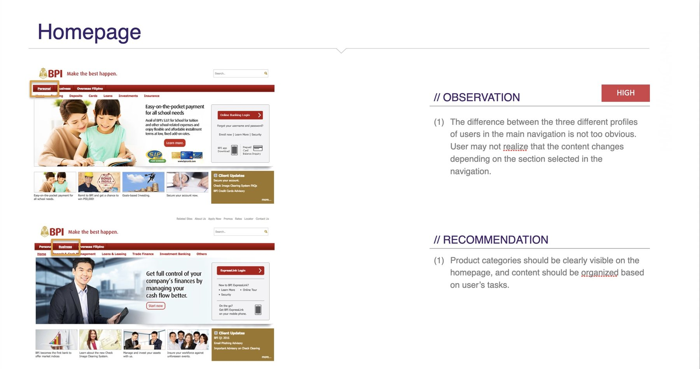
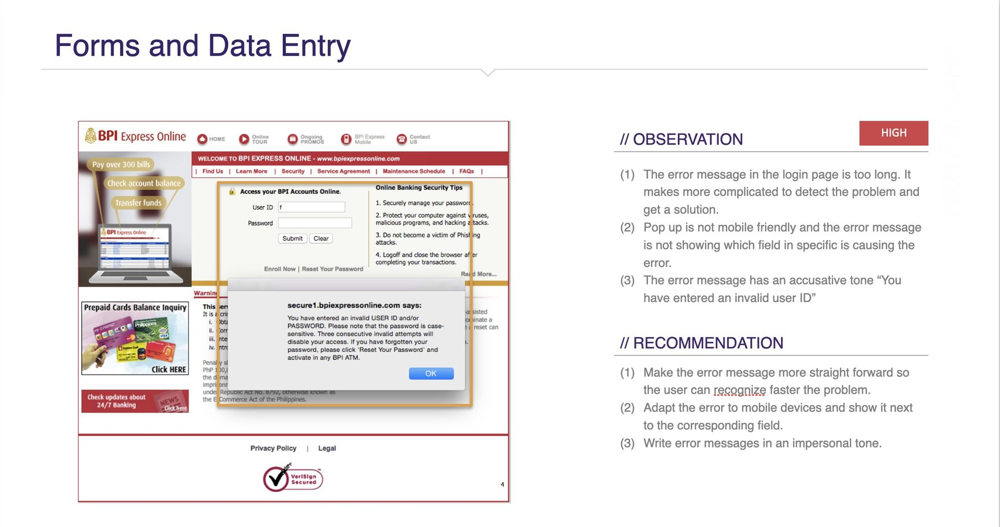
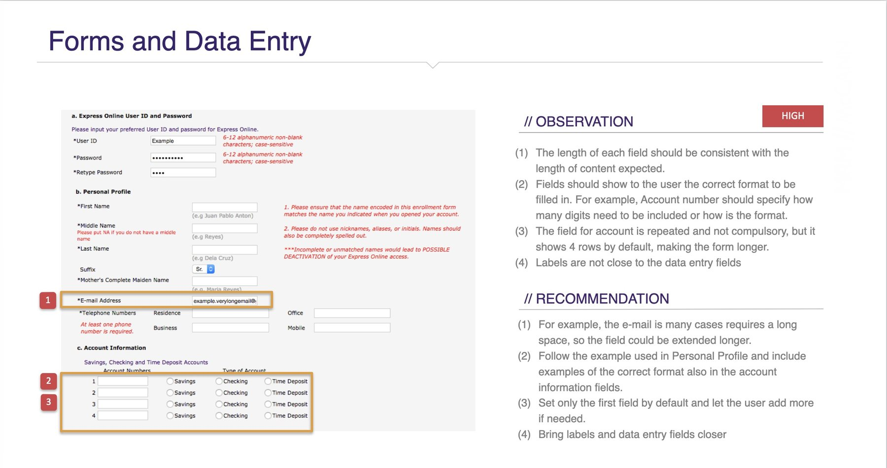
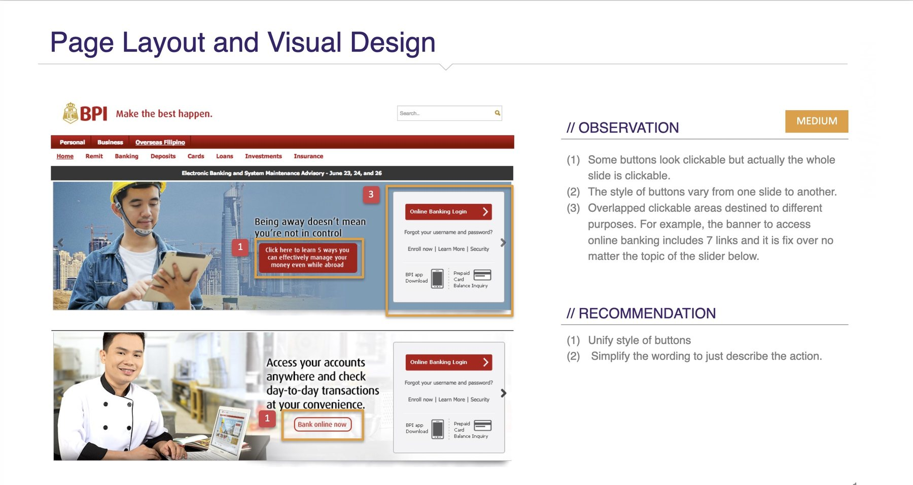

The brief: know what is broken before you redraw it
BPI came to us ahead of a redesign. The bank had accumulated sixteen public websites over the years: a main portal plus separate properties for cards, loans, trading, asset management, insurance, a foundation, a magazine, an overseas arm. Each had been built at a different time, by different people, to different standards.
The job was a heuristic review — not to design anything, but to judge all sixteen against one consistent standard: what was wrong, how badly, and in what order to fix it.
The method: six criteria, and severity defined by consequence
A heuristic review is only as good as its framework. Without one, it degrades into a list of things a designer happens to dislike — which is easy for a client to dismiss, and rightly so. We fixed two things up front.
Six criteria, adapted from the Nielsen Norman Group’s usability heuristics, were applied identically to every site:
- Navigation and information architecture
- Homepage
- Writing and content quality
- Page layout and visual design
- Forms and data entry
- Help, feedback and error tolerance
The same six, in the same order, sixteen times. That consistency is what made the sites comparable at the end.
Each criterion was then crossed with a high / medium / low severity rating. Severity was judged by what a problem cost the user, not by how much it bothered the reviewer:
The rating scale, defined in the report itself. Tying severity to user consequence is what turns an opinion into a triage list a product owner can act on.
The criteria and severity ratings also gave each site a scorecard: a shape that could be compared across the estate rather than another page of notes.
One site’s scorecard
Higher is better: strongest on page layout and visual design; weakest on writing and content quality.
Two evaluators reviewed independently and then reconciled their findings. That mattered: a single reviewer’s blind spots become the report’s blind spots.
Every finding was paired with a specific recommendation and, where useful, a live example from another bank that had already solved it: CommBank, BBVA, Santander, DBS.
What a finding looked like
Each entry paired the problem on the live site with an observation, a severity rating, and a specific recommendation. Four examples:




Screens are BPI’s public sites as they stood in 2016–2017, shown with the review’s own annotations; the sites have since been redesigned.
The scale of it
The work ran in two waves — eleven smaller properties first, then a deeper review of the five core sites (Express Online, Cards, Loans, Trade, Asset Management) plus their behaviour on mobile.
A high-severity finding is not a polish item — it represents a customer who may not complete the task at all. About half the estate was in that category.
The finding that mattered was not on any one site
Reviewing sixteen properties the same way surfaced something no single-site audit would have caught: the worst problems lived in the spaces between the sites.
- The estate did not connect. The main portal duplicated the content of the product sites rather than linking to them — a customer could view and apply for a card without ever being sent to the cards site. Only one of the four product sites linked back to the portal at all.
- One brand, sixteen identities. Headers, page titles, navigation, even the privacy policy rendered differently across properties. For a bank whose core asset is the sense that it is solid and consistent, the digital estate was communicating the opposite.
- The navigation was organised around the bank, not the customer. The first level of navigation asked users to classify themselves — personal, business, overseas — pushing the actual products, the thing people came for, down to the third level.
- Mobile was an afterthought with a measurable cost. Four of the five core sites had a fixed 900px width. Analytics showed the consequence: bounce rate climbed from 55% on desktop to 65% on mobile, while sessions were nearly a minute shorter.
That mobile number is the one I would still lead with today. It turned “the site isn’t responsive” from a design preference into a business fact — and the evidence was already sitting there in Analytics for anyone willing to look.
The consultancy’s real deliverable: the next move
A findings report that ends at findings puts the hardest work back on the client. So the engagement closed with a roadmap rather than a verdict: an honest account of what we knew, what we still needed to learn, and what each remaining step would cost.
We had the heuristic review and a twenty-question stakeholder survey across the bank’s business units. We were still missing the customer side: deeper interpretation of the analytics, and answers only the client could provide. One survey finding framed the whole strategy question — BPI was trusted because it had been solid for 165 years, and seen as unadventurous for exactly the same reason. That is not a problem a navigation fix addresses; it needed to be named before wireframes started.
From there, the sequence was explicit, with an estimate attached to each step:
analytics + client input → personas → user scenarios → web strategy → sitemap → wireframes
Research first, and slow on purpose. The argument was that the length of the research stage is what makes everything after it faster.
What I learned
This is the only time I have spent this long on a pure heuristic review — and the only project in this portfolio where I designed nothing. What the client was paying for was not a list of problems; it was a way through them. Every finding came with a recommendation, and the recommendations came in an order.
Working this closely with the heuristic principles made them second nature. I still reach for the same lens in team design critiques, and whenever we are improving an existing product.
It also taught me how to make scattered observations presentable — to turn pages of notes into something a client can hold: a severity scale, a per-site scorecard, a spider chart that shows a site’s shape at a glance.
And it is rare to look at a product from this far out — sixteen sites, different business lines, responsive behaviour as a dimension of its own. The brief was broad to the point of being unwieldy. What I am proudest of is that we still landed it as something clear and logical, with advice at a strategic level: not just what was broken, but where the bank should go next.